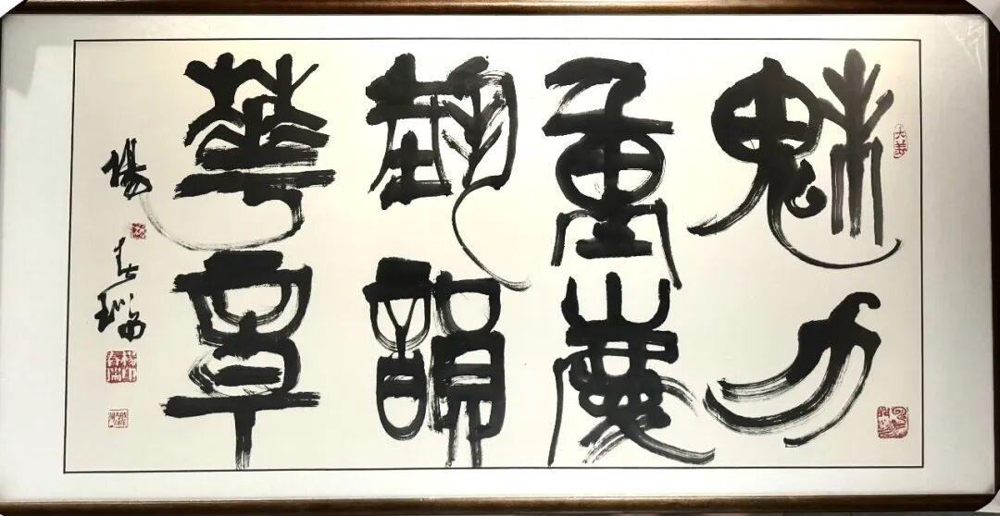
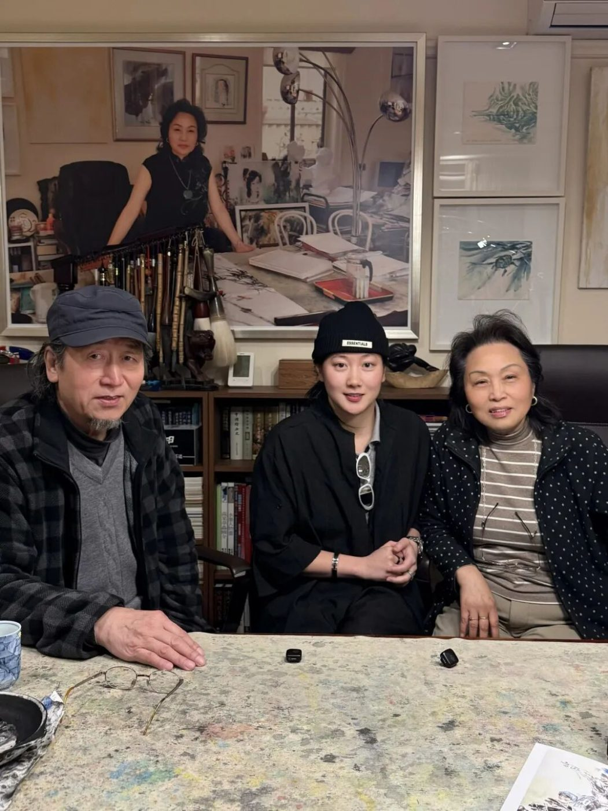
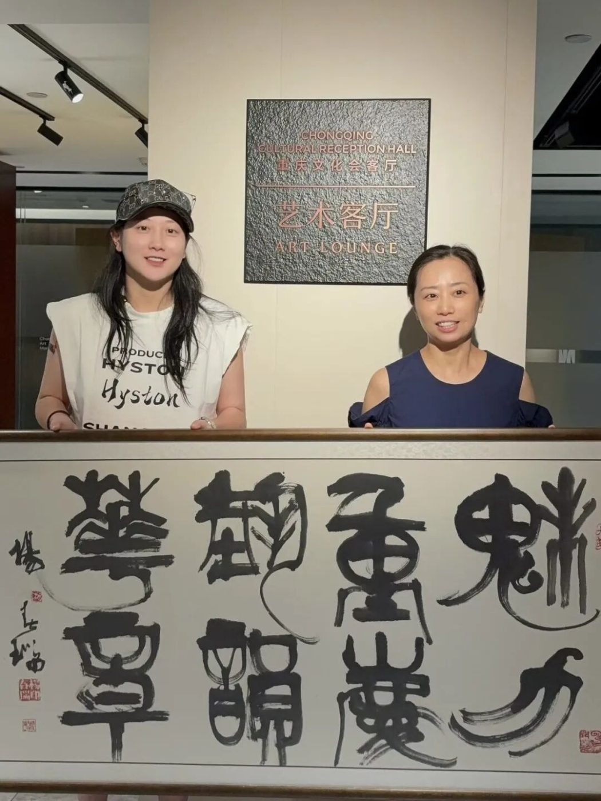

山海有回声｜一份来自墨尔本的艺术心意回到重庆
近日，一份跨越南北半球的艺术心意，从澳大利亚墨尔本抵达重庆。
旅澳著名书画家杨春瑞先生赠予青年文化团队HYSTON的书画作品，由澳洲重庆市文化体育教育旅游协会会长、HYSTON创始人黄欣悦亲自从墨尔本携带回国，并代表团队将这份来自澳大利亚华人艺术界的支持与心意赠予重庆文旅集团，于重庆艺术大市场正式完成作品接收仪式。

对于澳洲重庆市文化体育教育旅游协会而言，这并不是一次普通的艺术作品交接。
它更像是一封从重庆出发，在澳大利亚被看见、被回应，最终又重新寄回重庆的文化回信。
从重庆出发，在澳大利亚持续讲述重庆。
近年来，澳洲重庆市文化体育教育旅游协会持续推动重庆与澳大利亚之间的文化、体育、教育、旅游及青年交流。
协会一直希望做的，并不只是举办一场活动，而是让重庆真正进入澳大利亚的公共文化现场，让更多当地民众、海外华人、青年群体因为一部电影、一场展览、一次线下交流，而对重庆产生更具体、更真实的认识。
作为协会会长，黄欣悦也长期带领HYSTON青年团队，通过城市影像、电影放映、文化活动、青年交流等方式，在澳大利亚持续开展重庆文化传播。
今年6月，由澳洲重庆市文化体育教育旅游协会主办、HYSTON策划制作、重庆艺术大市场协办的《重庆市民》墨尔本城市首映暨重庆直辖29周年主题活动在墨尔本举行。
活动以电影与城市叙事为媒介，把重庆的街巷、人物、声音与城市记忆带到澳大利亚，也让“重庆”不再只是地图上的一个地名，而成为海外观众能够真实感知的一座城市。
对于协会而言，这正是民间文化交流最有价值的部分。
不是单向输出，而是通过一次次真实的相遇，让人与人之间产生新的关系。
也正是在这样的过程中，黄欣悦与HYSTON团队有幸结识了旅澳著名艺术家杨春瑞先生和萧美玉女士。
两位旅澳艺术前辈，看见一群年轻人在海外讲重庆。杨春瑞先生、萧美玉女士在澳大利亚生活、创作多年，也长期致力于中华文化与中国艺术在海外的传播。
当两位老师了解到，黄欣悦及HYSTON团队多年来持续在澳大利亚推广重庆文化，并看到一群年轻人愿意投入时间、精力和资源，用属于这一代人的方式继续讲述家乡，两位前辈给予了团队很多鼓励与支持。

此次，杨春瑞先生特别以自己的艺术作品，表达对HYSTON青年团队的认可。
对年轻团队来说，这份支持的意义，并不仅仅在于一幅作品本身。
更重要的是，一位已经在海外走过数十年文化传播道路的前辈，看见了后来者，并愿意把自己的信任交给他们。
杨春瑞：数十年“以画说话”，以艺术连接中澳。
杨春瑞先生1989年从北京移居澳大利亚墨尔本，是长期活跃于中澳艺术交流领域的旅澳书画家。
数十年来，他潜心研习诗、书、画、印，在人物、山水、花鸟等多个艺术门类持续创作。
1984年，其作品《谭嗣同就义》入选第六届全国美术作品展览；1988年，写意国画《扬州八怪》荣获首届全国书画大奖赛一等奖；1986年，他受邀为加拿大温哥华世界博览会创作并展出八米长卷《千里运河图》。
移居澳大利亚后，杨春瑞先生依然坚持“以画说话”，通过艺术创作、展览及文化交流活动推动中国书画在海外传播，并长期参与中澳文化艺术交流。
数十年的海外生活，并没有让他的艺术与中华文化之间产生距离，反而让“如何让中国艺术被更多人理解”成为其长期实践的一部分。
而此次，他愿意以自己的作品支持一支正在澳大利亚推广重庆文化的年轻团队，本身也成为一次跨代文化传承。
萧美玉：以侨为桥，以艺为桥。
这份跨越八千多公里的艺术缘分，同样离不开旅澳知名画家、艺术教育者萧美玉女士的支持与促成。
萧美玉现居澳大利亚墨尔本，赴澳前曾任教于北京服装学院美术学院，教授中国画等课程。
她长期从事新锐花鸟画创作，将中国传统笔墨与东西方艺术元素融入个人表达，作品曾多次入选全国及省市美术展览并获奖，并被私人藏家及艺术机构收藏。
赴澳后，萧美玉持续活跃于当地艺术及文化交流领域，曾作为特邀画家参加澳大利亚相关年度艺术大展及墨尔本多项艺术展览，并受到SBS、ABC及当地华文媒体等报道与采访。
在艺术创作之外，她长期推动中澳文化艺术交流，倡导：
“以侨为桥，以艺为桥。”
她曾在墨尔本皇家理工大学RMIT、澳洲博士沙龙等机构举办艺术讲座与论坛，讲授东西方绘画鉴赏、中国书画艺术等内容，并多次受邀参与当地政府部门及中国驻墨尔本总领馆相关文化艺术活动。
她亦参与大型画作《盛世河山》的创作，并通过“中国书画赏析”云讲座等形式持续参与公共艺术教育。
目前，萧美玉担任澳大利亚国际多元文化艺术节评委会主席、澳洲中国书画院常务副院长、澳大利亚大中华书画家总会副主席等职。2024年，她获“澳大利亚杰出移民女性”称号。
但对于澳洲重庆市文化体育教育旅游协会和HYSTON而言，萧美玉老师还有一个更具体的身份：
一位真正愿意看见年轻人、扶年轻人继续往前走的文化前辈。
从了解黄欣悦及HYSTON团队在澳洲所做的重庆文化推广，到持续给予鼓励，再到此次作品交流的沟通与促成，这份支持跨越的不只是年龄，也是一代海外文化传播者与新一代青年创作者之间的连接。
这份支持，没有停在HYSTON
收到杨春瑞先生赠予的艺术作品后，黄欣悦与团队最终决定，不将作品留作个人或HYSTON收藏。
因为这份支持，本身就是因“重庆”而发生。
于是，黄欣悦将作品从墨尔本亲自携带回国，并代表HYSTON，将这份来自澳大利亚华人艺术前辈的认可与心意，赠予一直以来关心、支持青年文化交流实践的重庆文旅集团。
9月7日，作品在重庆艺术大市场正式完成接收。

从今年6月，协会与HYSTON、重庆艺术大市场共同把《重庆市民》带到墨尔本，到此次一件因重庆文化海外传播而产生的艺术作品重新回到重庆，这一来一回，形成了一次很特别的双向文化交流。
第一次，我们把重庆的故事带到澳大利亚。
这一次，我们把澳大利亚给予我们的认可与善意带回重庆。
两代海外文化传播者之间的一次接力
一边，是已经在澳大利亚生活数十年，长期通过书画、艺术教育传播中华文化的前辈艺术家。
一边，是正在用电影、城市影像、新媒体、文化活动和青年交流讲述重庆的新一代年轻人。
中间连接他们的，是同一件事：
如何让中华文化、让重庆，被更多人真正看见。
对于黄欣悦和HYSTON团队而言，被已经走过几十年的人看见，并告诉年轻人：
“你们做的事情有意义，继续做。”
本身就是一份很重的礼物。
而协会希望做的，就是让这种支持不只发生在某一个人、某一个团队身上。
让海外华人前辈积累了几十年的文化资源、经验与影响力，与新一代年轻创作者真正连接起来。
也让年轻人的新表达、新媒介和新的国际网络，为传统文化传播打开新的出口。
从“走出去”到“带回来”
文化交流从来不是单向的。
重庆可以通过电影、艺术、青年项目走向澳大利亚；
澳大利亚的华人艺术家，也可以因为一次重庆文化活动，重新与家乡、与重庆的文化机构发生联系。
一幅作品，可能只是很小的载体。
但它背后真正珍贵的，是人与人之间建立起来的关系。
从重庆到墨尔本，再从墨尔本回到重庆。
这一次，一幅作品替这段文化交流走完了一个完整的圆。
未来，澳洲重庆市文化体育教育旅游协会也将继续发挥连接重庆与澳大利亚的桥梁作用，推动两地在文化、体育、教育、旅游及青年领域形成更多持续合作。
协会也将继续支持包括HYSTON在内的青年文化力量，连接更多海外华人艺术家、文化机构、高校与青年群体，让重庆文化在澳大利亚被更多人看见，也让海外产生的资源、信任与善意，持续回到重庆，形成真正双向、长期的文化交流网络。
山海虽远，文脉相连。
我们在澳大利亚讲重庆，也把世界给予重庆的回声带回来。